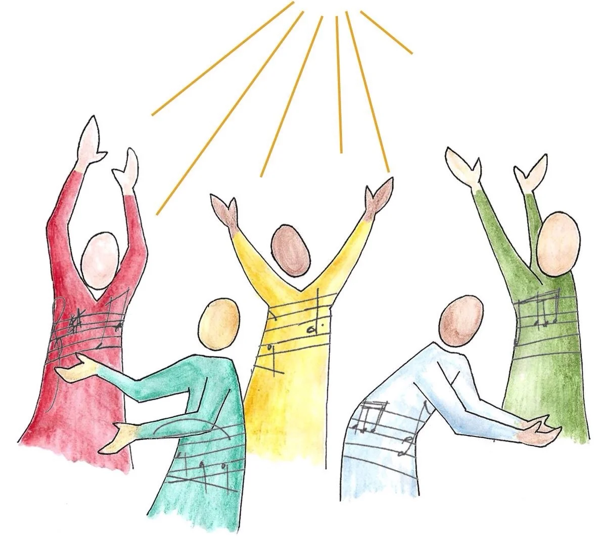

My E-PORTFOLIO
Peter Caitona
BSCS - 4
About Me
Hello! I am Peter G. Caitona, a 4th-year Bachelor of Science in Computer Science (BSCS) student. While I may not always excel in academic activities, I am committed to improving myself every day. I make a consistent effort to listen carefully, understand my lessons, and learn from my instructors and classmates.
Computer Science is a challenging field, but it motivates me to push beyond my limits. I believe that learning is a continuous process, and growth comes from effort, patience, and determination. I am doing my best to develop my skills in programming and technology, and I am open to learning from mistakes and experiences. My goal is to become a better version of myself and gradually build the knowledge and confidence needed to succeed in the IT industry.
Self-Assessment

Harmony with God
A. How does faith, prayer, or spirituality guide me toward peace?
My faith helps me stay calm during problems. When I pray, I feel relieved and less stressed. It gives me hope and reminds me that I am not alone in facing challenges.
B. What values do I practice because of my belief in God?
Because of my belief in God, I try to practice kindness, patience, respect, honesty, and forgiveness. I try to treat others the way I want to be treated.
Harmony with the Self
A. How do I maintain inner peace?
I maintain inner peace by staying positive and accepting that I cannot control everything. I take time to rest, think, and improve myself little by little..
B. What habits, values, or attitudes help me manage my emotions?
I try to stay calm when I am stressed or angry. I listen more, think before I speak, and remind myself to be patient. I also learn from my mistakes instead of blaming myself too much.

Harmony with Others
A . How do I promote peace in my family, school, or community?
A . How do I promote peace in my family, school, or community?
I promote peace by respecting others, avoiding arguments, and helping when I can. I try to understand different opinions and stay calm during misunderstandings.
B. How can conflicts be resolved peacefully?
Conflicts can be resolved by talking calmly, listening to both sides, and being willing to compromise. Saying sorry and forgiving each other also help solve problems peacefully.
Harmony with Nature
A. How do I show care for the environment?
I show care for the environment by not littering, saving water and electricity, and keeping my surroundings clean.
B Why is protecting nature important for peace?
Protecting nature is important because a clean and healthy environment helps people live safely and comfortably. When nature is protected, future generations can also enjoy and benefit from it.

Contact
Email: petafromyt@email.com
Cellphone Number: 09366784396